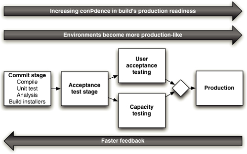

Fasted automated feedback on the correctness of your application every time there's a change to code
integrate early and often
Everyone Commits to the Mainline Every Day
What you Need
Version Control
code, tests, database scripts, build and deployment scripts, anything you need to create, install, run and test your application, no matter the size of your project
An Automated Build
The automated build must be able to be started from the command line, or a person or a computer must be able to run the build, test, and deployment process from the command line. The idea of be able to run through command line is a best practice no matter if you use IDE or continiuos integrations tools, the idea is that these tools would be using the same script you can run through your command line.
Justifications
you must able to run in an automated way so the build can be audit when things go wrong
build scrips shoudl be treated like your codebase, tested and refactored constantly
makes understanding, maintaining, and debugging the build easier, and allow better collaboration with ops team
Agreement of the Team
CI is a practice that requires commitment and discipline from you dev team.
Developers merge their code into trunk daily
Developers break up large features into small, incremental changes
...when starting to use CI Servers according to Jez Humble
Check to see if the build is already running. If so, wait for it to finish. If it fails, you'll need to work with the rest of the team to make it green before you check in
Once it has finished and the tests have passed, update the code in your development environment from this version in the version control repository to get any updates
Run the build script and tests on your development machine to make sure that everything still works correctly on your computer, or alternatively use your CI tool's personal build feature
If your local build passes, check your code into version control
Wait for your CI tool to run the build with your changes
If it fails, stop what you're doing and fix the problem immediately on your development machine - to to step 3
If your build passes, rejoice and move on to your next task
Prerequisites to CI
according to Jez Humble
Check in Regurlaly to Trunk or Mainline, at least a couple of times a day
makes your changes smaller and thus less likely to break the build
you have a recent knowngood version of the software to revert in case of mistake or wrong path
helps to be more discipline about refactoring and stick to small changes that preserve behavior
ensure that changes altering a lot of files are less likely to conflict with other people's work
allows developers to be more explorative
force you to take regular breaks
...
Comprehensive Automated Test Suite
without automated tests, passing a build is only compile and assemble
it's essencial to have some level of test to provide confidence that your application is working
unit tests, component tests, and acceptance tests are kind of tests we are interested in running from our CI
Keep the Build and Test Process Short
If It taks to long
People will stop doing a full build and running test before check in the code
The CI process will take so long that multiple commits will have taken place by the time you can run the build again, so you won't know which check in broke the build
People will check in less often
Checking Into to Trunk ...
Use Trunk based despite we have many projects using branchs to manage large teams
It's impossible to truly do continuous integration while using branches, your code is not been integrated with that other developers
Managing your development workspace
Developers should be able to run the build, execute the automated tests, and deploy the application in and env under their control
Running the application locally should use the same automated process used in CI and testing envs and ultimately in production
For this is needed the use of configuration management for source code, test data, DB scripts, build scripts and deployment scripts, all of this in VCS and should be the most recent version that passed all automated tests in your CI server
configuration management of third-party dependencies, libraries and components
make sure that automated tests including smoke tests, can be run on developer machines
Git Blame
Git Blame
Essential Practices
according to Jez Humble
Don't check in on a broken build
Always Run All Commit Tests Locally before Commiting, or Get Your CI Server to Do It for You
Wait for Commit Tests to Pass before Moving On
Neven go home on a broken build
Always Be Prepared to Revert to the Previous Revision
Time-box Fixing before Reverting
Don't Comment Out Failing Tests
Take Responsability for All Breakages That Result from Your Changes
TDD
Yes, 10000 developers all working from HEAD actually works. People often say that this can't possibly scale, and yet here is an example of it working. There's a big difference between "it can't work", "I haven't gotten it to work", and "I'm conjecturing that it couldn't work".
Even though Google has one big monolithic code tree, each project can be checked out individually. That said, if your project is a library that other people use, compiling at timestamp T means getting the library as it is at timestamp T also.
Do some projects use a branch-and-merge methodology? When I started at Google some did use "branch and merge". However those numbers were shrinking. I'm sure there were still some that did this, for special edge cases. Not that I had visibility to every project at Google, but it was generally accepted as true that nearly everyone worked from HEAD.
"50% of code changes every month": A big part of why that is possible is that Google is very aggressive about deleting inactive code. It's still in the VCS's history if you need it, so why not delete it if it isn't being used? By being aggressive about deleting inactive code it greatly reduces the maintenance tax. Making a global change (like.... changing a library interface) is much easier when you only have to do it for active projects.
Tom Limoncelli - ACM Queue - http://bit.ly/1RD1ZW0
Fasted automated feedback on the production readiness of your application every time there's a change - to code, infrastructure, or configuration
software is always deployable
Continiuos Delivery make cheap and low-risk to release new version of your software.
continuous delivery ideal
software is always production ready
deployments are reliable and commonplace
everyone can self-service deployments
releases occur according to business needs, not operational constraints
keys
Architecture
Design to Testability
Design to Deployability
Patterns and Practices
Collaboration
prerequisites
configuration management
automated tests
continuos integration
Correlation with IT Performance
Our code, app configuration and system configurations are in a version control system
We get failure alerts from logging and monitoring systems
VERY HARD TO ACHIEVE
Developers merge their code into trunk daily
Developers break up large features into small, incremental changes
When development and operational teams interact, the outcome is generally win/win
Puppet Labs - DevOps Report 2014
Continuous Delivery requires, as a pre reqs an intensive collaboration between different roles, minimizing the idea of silos. The team should have the mind set that delivery the software is a responsability of everyone. Developers, testers, UX, operations, business people should work together and collaborativily through delivery process. One practice is have fisically developers, testers, business and operation people working together.
Path diagram showing relationships between continuous delivery practices, IT performance, deployment pain, change failure rate, and organization performance
Puppet Labs - DevOps Report 2015
Deployment Pipelines
A simple value stream map for a product
Jez Humble; David Farley - Continuos Delivery
Deployment Pipeline
Jez Humble; David Farley - Continuos Delivery

Jez Humble; David Farley - Continuos Delivery
Deployment Pipeline
Jez Humble; David Farley - Continuos Delivery
Pipeline Activity
Jez Humble; David Farley - Continuos Delivery
Acceptance Stage
End-to-end tests in production-like environment
Trigged when upstream stage passes
First DevOps-centric build
Neal Ford - Continuos Delivery
Later Stages
UAT, staging, integration, production, ...
Push versus Pull model
Deployments sef-serviced through push-button process